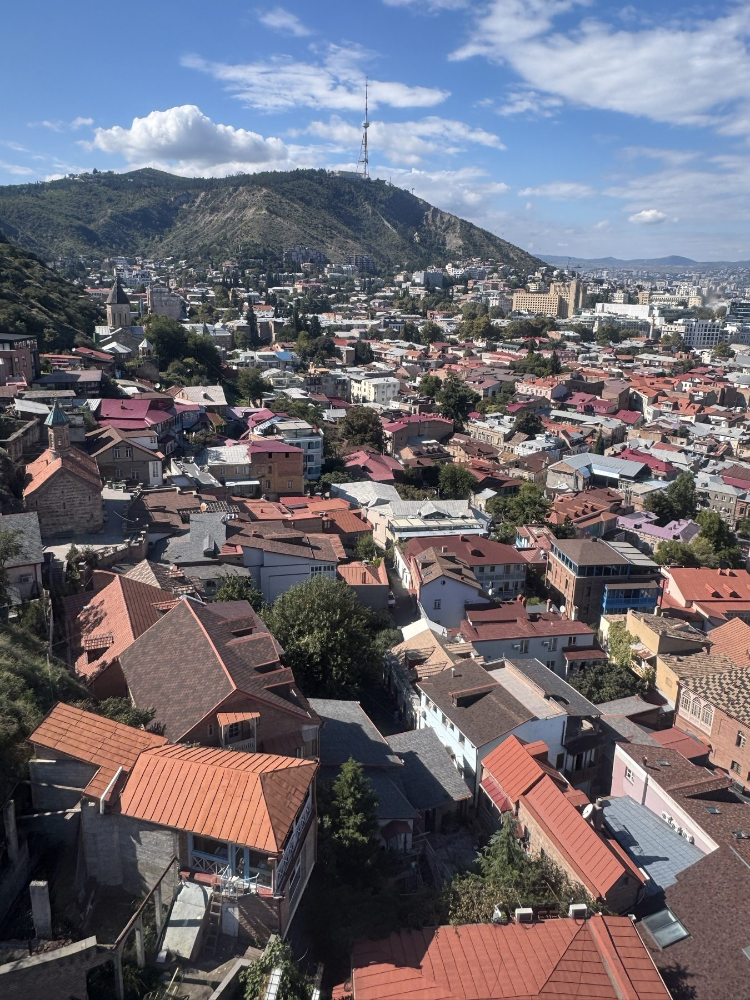
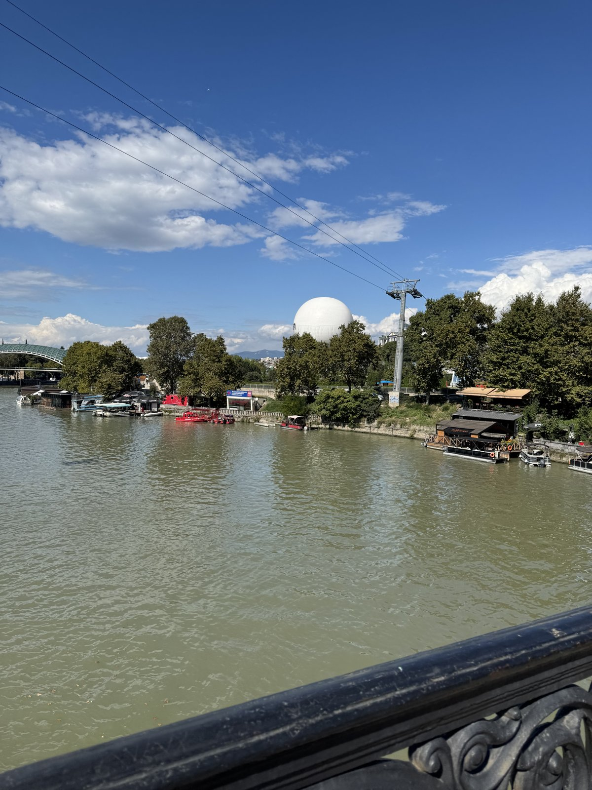
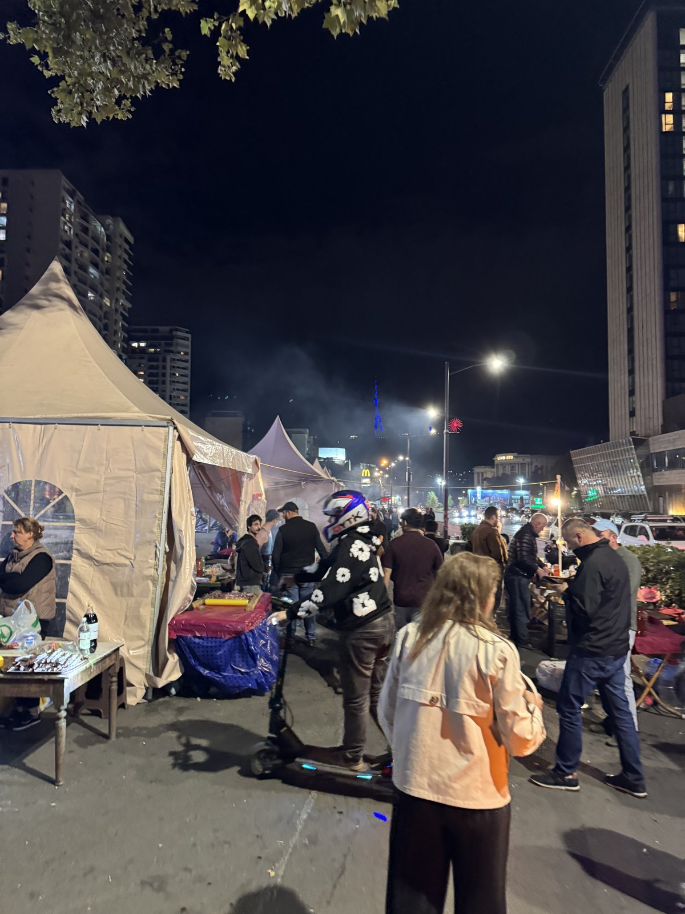

Georgia is one of the easiest places in the world for foreign couples to get legally married, often on the same day. We are a small Japanese-run team living in Tbilisi. We find your witnesses, translate for you, sort out the paperwork and help you celebrate.
Ask about your date WhatsAppPrices in USD for the couple. Government fees, notary and apostille fees are paid at cost and shown to you in advance.
Bringing family and friends? We also arrange venues, decor, music and catering for larger celebrations, including full Indian weddings. See our Indian wedding packages.
Foreigners can marry at the Public Service Hall, and registration is often possible on the day you apply. The certificate can be apostilled for use at home.
Georgia is one of the oldest wine regions on earth. Toast with amber qvevri wine in the city where every dinner is a feast.
Sulphur baths, balconies and churches in Tbilisi; snow peaks in Kazbegi; vineyards in Kakheti, two hours away.
Georgians are famous for hospitality. Many nationalities can visit visa-free, and others can use the e-visa.




I am Kyohei Mikami. I came from Japan, set up my company OMURICELAND LLC in Tbilisi, and run a Japanese restaurant at Japan Food Hub (1 Davit Gamrekeli St). Japanese people are known for being careful, punctual and honest, and that is how we look after your day.
We work with local interpreters, photographers and caterers, and we are the one contact for everything.
Often yes, when your documents are ready. Rules can change, so we check your nationality and documents with you before you book flights.
No. We are not lawyers. We help you prepare, go with you and translate. Whether your home country recognises the marriage is for your own authorities to confirm.
Yes. Two witnesses at the Public Service Hall for USD 150 (up to 1 hour). Best if you already have your documents ready and someone to translate on the day.
No. Two witnesses are included in every package. You may also bring your own: witnesses must be adults (18+) with a valid ID, and the official rules set no nationality requirement. Foreign witnesses bring their original passport.
Send us your nationalities and preferred dates. We reply with what you need and a confirmed quote. A 50% deposit holds your date.